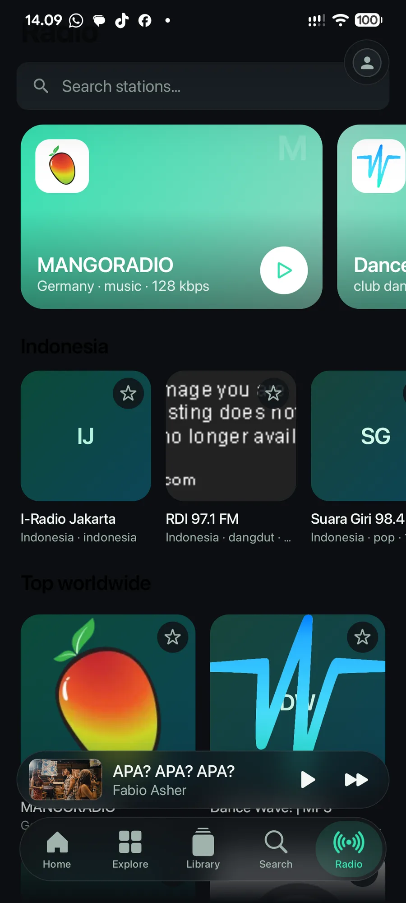

Radio dunia, tampil premium
Puluhan ribu stasiun dari Radio Browser, ditata ulang bergaya Apple Music: kartu hero besar untuk stasiun teratas dunia, baris favorit, dan pilihan stasiun Indonesia — dari I-Radio Jakarta sampai radio dangdut lokal.
Listen Together
Dengar bareng sampai 5 perangkat dengan putar yang sinkron dan antrean bersama. Satu orang menekan play, semua ikut mendengar — cocok untuk rumah, kos, atau perjalanan bareng teman.
Lirik tersinkron
Ikuti lagu baris demi baris, menyala mengikuti vokal yang sedang berbunyi.
Unduh & dengar offline
Simpan lagu ke perangkat dan putar kapan saja tanpa kuota — kini juga langsung dari menu lagu di TV. Tersimpan rapi di folder Music/ChordWave.
Tanpa iklan, tanpa langganan
Tidak ada jeda iklan, tidak ada paywall, tidak ada masa coba. Gratis sepenuhnya.
Update dari dalam aplikasi
Versi baru muncul sebagai pemberitahuan di aplikasi dan terpasang sekali ketuk — tidak perlu berburu file lagi.
Sumber terbuka, bisa diaudit siapa pun
Kode ChordWave terbuka di GitHub di bawah lisensi GPL-3.0. ChordWave adalah fork dari BitChord karya kushagrasinghx — dikembangkan, diterjemahkan, dan diseragamkan untuk HP, TV, dan Wear OS oleh Riki Nurjaman.